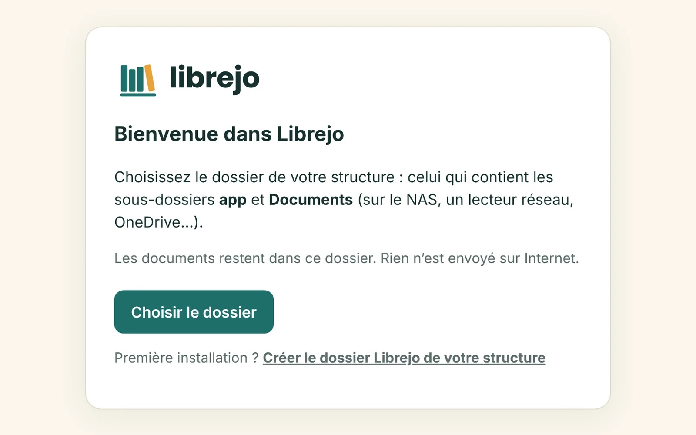

Installer Librejo
Dix minutes, avec Chrome ou Edge, sur un ordinateur.
Trois étapes
Ouvrez Librejo
Avec Chrome ou Edge, cliquez sur « Installer ».
Choisissez le dossier
Le dossier partagé de votre structure.
Suivez l’assistant
Nom, logo, catégories, mot de passe.
Le détail, pas à pas
1Ouvrez Librejo
Avec Chrome ou Edge, sur un ordinateur, ouvrez l’application et cliquez sur « Installer ». Une icône arrive sur le bureau. Si l’installation est interdite sur votre poste, Librejo marche aussi dans un simple onglet.
2Choisissez le dossier de la structure
Pour une première installation, cliquez sur « Créer le dossier Librejo de votre structure » et indiquez le dossier partagé. Librejo y prépare son rangement.
3Suivez l’assistant
Nom de la structure, logo, équipe, catégories, noms des fichiers, modèles, messagerie et mot de passe admin. Chaque étape peut être passée, et tout se modifie ensuite.
4Installez les autres postes
Sur chaque poste, ouvrez Librejo et choisissez le même dossier. Il n’y a pas d’assistant : tout est déjà réglé.
5Quel dossier partagé choisir ?
Un dossier que tous les postes voient : un NAS ou un serveur de fichiers ; OneDrive, SharePoint ou Teams synchronisé sur chaque poste ; Google Drive pour ordinateur, Dropbox ou Nextcloud. Sur un seul ordinateur, cela marche aussi, sans partage.
6Que dire au service informatique ?
Le site ne sert que le code : aucune donnée n’y est envoyée, et le code est public. Il suffit d’autoriser l’adresse du site, et l’accès aux dossiers pour ce seul site dans Chrome ou Edge. La fiche PDF reprend ces points.
7Le navigateur redemande l’accès au dossier
C’est normal : par sécurité, Chrome et Edge le redemandent de temps en temps. Un clic sur « Autoriser » suffit.
